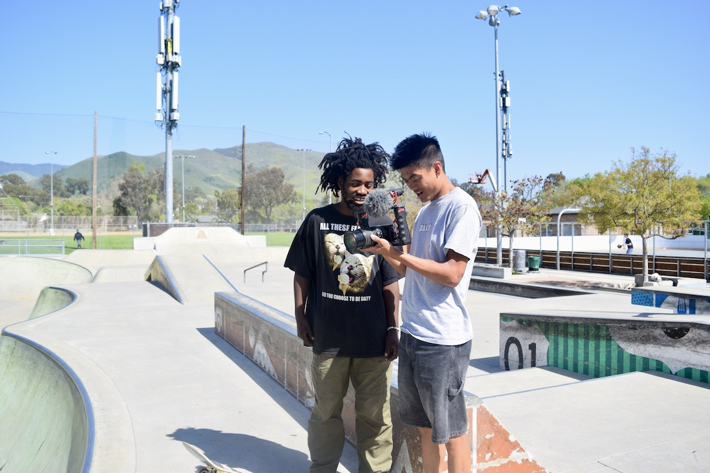
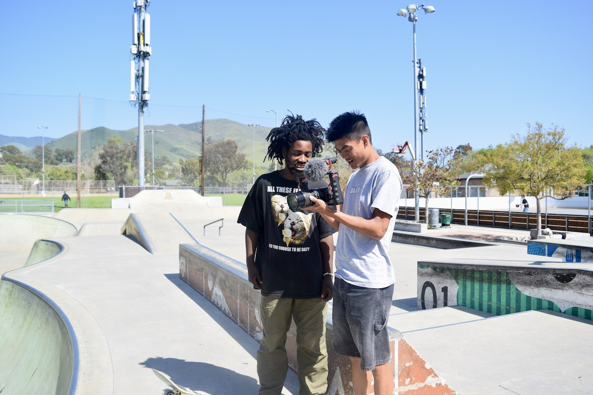

For centuries, art’s influence has been able to change the mindsets of others, and even change the course of society. And most of these powerful art pieces come from young artists who share their unique styles and bold viewpoints.
Meet just a few of the Cal Poly artists who use their own techniques and personal perspectives in their pieces to impact the different communities around them.
Student Artists At Work
Each student's art journey is different, some were born into an artistic household and others randomly found a passion just a few years ago. Due to the variety of artists and their work, the opportunity to inspire is tremendous.
![Focusing his camera out onto the water, second year photography and video concentration major, Owen Beim decides which angle will get him the best shot. Starting at just 12 years old with a GoPro camera, Beim’s passion for photography and videography (especially when filming in the water) has been a sort of “getaway” for him. “For me, being in the water in general is such a nice getaway, but when the waves are really good and I know I am going to get good photos, it’s just the best feeling,” Beim said.](img/2.jpg)
 
